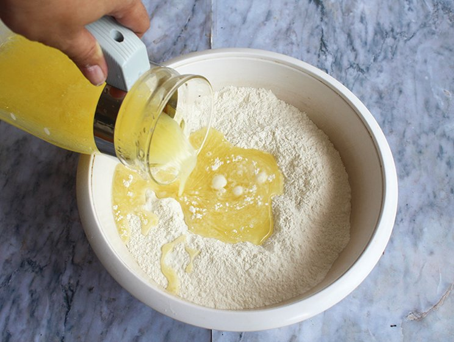

Resep Kue Maryam
Bahan-bahan:
- 250 gr tepung terigu
- 1 butir telur
- 3 sdm margarin,lelehkan
- 100 ml air hangat
- 2 sdm susu bubuk(optional)
- 1/2 sdt garam
- margarin leleh untuk olesan
- minyak untuk merendam
Langkah-langkah
- Campur semua bahan roti jadi satu

- Uleni sampai kalis (aku pake tangan) jangan takut jika
adonan lengket ya, lumuri tangan sesekali dg tepung
(tapi jangan menambah tepung) uleni terus sampai adonan kalis.

- Kalisnya adonan canai tidak sekalis adonan roti ya, kira2 seperti
ini sudah cukup.